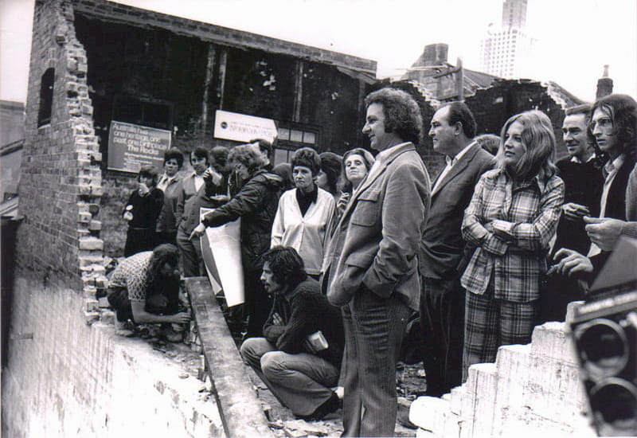
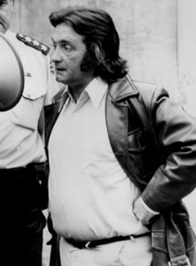
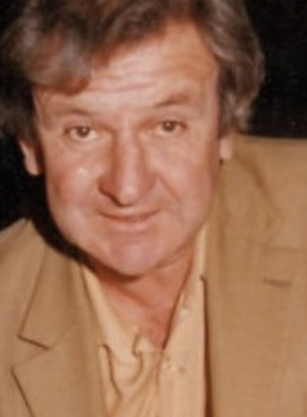
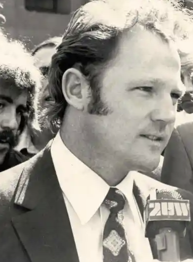

The New South Wales branch of the Builders Labourers Federation, at least until 1975, was perhaps one of the most
unique Australian political phenonmenons. Day and night, they challenged some of the most
powerful people in their contemporary society, preserved both natural and built heritage,
established strong working conditions in their industry and shielded the working class and the
most vulnerable groups of their society.
In this website, we are going to explore how they worked around the clock, both day and night,
to build their platform, maintain their principles and hold firm their militant power. The website
is divided by top and bottom. The top navigation bar details ways the BLF fought during the day,
and fought for the day we have now, and the bottom navigation bar details ways the BLF fought during the night.



